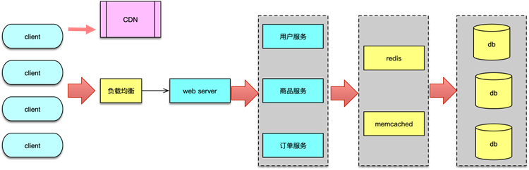

- 00 开篇寄语：缓存，你真的用对了吗？.md.html
- 01 业务数据访问性能太低怎么办？.md.html
- 02 如何根据业务来选择缓存模式和组件？.md.html
- 03 设计缓存架构时需要考量哪些因素？.md.html
- 04 缓存失效、穿透和雪崩问题怎么处理？.md.html
- 05 缓存数据不一致和并发竞争怎么处理？.md.html
- 06 Hot Key和Big Key引发的问题怎么应对？.md.html
- 07 MC为何是应用最广泛的缓存组件？.md.html
- 08 MC系统架构是如何布局的？.md.html
- 09 MC是如何使用多线程和状态机来处理请求命令的？.md.html
- 10 MC是怎么定位key的.md.html
- 11 MC如何淘汰冷key和失效key.md.html
- 12 为何MC能长期维持高性能读写？.md.html
- 13 如何完整学习MC协议及优化client访问？.md.html
- 14 大数据时代，MC如何应对新的常见问题？.md.html
- 15 如何深入理解、应用及扩展 Twemproxy？.md.html
- 16 常用的缓存组件Redis是如何运行的？.md.html
- 17 如何理解、选择并使用Redis的核心数据类型？.md.html
- 18 Redis协议的请求和响应有哪些“套路”可循？.md.html
- 19 Redis系统架构中各个处理模块是干什么的？.md.html
- 20 Redis如何处理文件事件和时间事件？.md.html
- 21 Redis读取请求数据后，如何进行协议解析和处理.md.html
- 22 怎么认识和应用Redis内部数据结构？.md.html
- 23 Redis是如何淘汰key的？.md.html
- 24 Redis崩溃后，如何进行数据恢复的？.md.html
- 25 Redis是如何处理容易超时的系统调用的？.md.html
- 26 如何大幅成倍提升Redis处理性能？.md.html
- 27 Redis是如何进行主从复制的？.md.html
- 28 如何构建一个高性能、易扩展的Redis集群？.md.html
- 29 从容应对亿级QPS访问，Redis还缺少什么？.md.html
- 30 面对海量数据，为什么无法设计出完美的分布式缓存体系？.md.html
- 31 如何设计足够可靠的分布式缓存体系，以满足大中型移动互联网系统的需要？.md.html
- 32 一个典型的分布式缓存系统是什么样的？.md.html
- 33 如何为秒杀系统设计缓存体系？.md.html
- 34 如何为海量计数场景设计缓存体系？.md.html
- 35 如何为社交feed场景设计缓存体系？.md.html
- 捐赠
33 如何为秒杀系统设计缓存体系？
本课时我们具体讲解如何为秒杀系统设计缓存体系。
秒杀系统分析
互联网电商为了吸引人气，经常会对一些商品进行低价秒杀售卖活动。比如几年前小米的不定期新品发售，又如当前每年定期举行双11、双12中的特价商品售卖。秒杀售卖时，大量消费者蜂拥而至，给电商带来了极大的人气，也给电商背后的服务系统带来了超高的并发访问负荷。
在不同电商、不同的秒杀活动，秒杀系统售卖的商品、销售策略大不相同，但秒杀背后的秒杀系统却有很大的相似性，基本都有以下这些共同特点。
首先，秒杀业务简单，每个秒杀活动售卖的商品是事先定义好的，这些商品有明确的类型和数量，卖完即止。
其次，秒杀活动定时上架，而且会提供一个秒杀入口，消费者可以在活动开始后，通过这个入口进行抢购秒杀活动。
再次，秒杀活动由于商品售价低廉，广泛宣传，购买者远大于商品数，开始售卖后，会被快速抢购一空。
最后，由于秒杀活动的参与者众多，远超日常访客数量，大量消费者涌入秒杀系统，还不停的刷新访问，短时间内给系统带来超高的并发流量，直到活动结束，流量消失。
分析了秒杀系统的特点，很容易发现，秒杀系统实际就是一个有计划的低价售卖活动，活动期间会带来 N 倍爆发性增长的瞬时流量，活动后，流量会快速消失。因此，秒杀活动会给后端服务带来如下的技术挑战。
首先，秒杀活动持续时间短，但访问冲击量大，秒杀系统需要能够应对这种爆发性的类似攻击的访问模型。
其次，业务的请求量远远大于售卖量，大部分是最终无法购买成功的请求，秒杀系统需要提前规划好处理策略；
而且，由于业务前端访问量巨大，系统对后端数据的访问量也会短时间爆增，需要对数据存储资源进行良好设计。
另外，秒杀活动虽然持续时间短，但活动期间会给整个业务系统带来超大负荷，业务系统需要制定各种策略，避免系统过载而宕机。
最后，由于售卖活动商品价格低廉，存在套利空间，各种非法作弊手段层出，需要提前规划预防策略。
秒杀系统设计
在设计秒杀系统时，有两个设计原则。
首先，要尽力将请求拦截在系统上游，层层设阻拦截，过滤掉无效或超量的请求。因为访问量远远大于商品数量，所有的请求打到后端服务的最后一步，其实并没有必要，反而会严重拖慢真正能成交的请求，降低用户体验。
其次，要充分利用缓存，提升系统的性能和可用性。

秒杀系统专为秒杀活动服务，售卖商品确定，因此可以在设计秒杀商品页面时，将商品信息提前设计为静态信息，将静态的商品信息以及常规的 CSS、JS、宣传图片等静态资源，一起独立存放到 CDN 节点，加速访问，且降低系统访问压力。
在访问前端也可以制定种种限制策略，比如活动没开始时，抢购按钮置灰，避免抢先访问，用户抢购一次后，也将按钮置灰，让用户排队等待，避免反复刷新。
用户所有的请求进入秒杀系统前，通过负载均衡策略均匀分发到不同 Web 服务器，避免节点过载。在 Web 服务器中，首先进行各种服务预处理，检查用户的访问权限，识别并发刷订单的行为。同时在真正服务前，也要进行服务前置检查，避免超售发生。如果发现售出数量已经达到秒杀数量，则直接返回结束。
秒杀系统在处理抢购业务逻辑时，除了对用户进行权限校验，还需要访问商品服务，对库存进行修改，访问订单服务进行订单创建，最后再进行支付、物流等后续服务。这些依赖服务，可以专门为秒杀业务设计排队策略，或者额外部署实例，对秒杀系统进行专门服务，避免影响其他常规业务系统。

在秒杀系统设计中，最重要的是在系统开发之初就进行有效分拆。首先分拆秒杀活动页面的内容，将静态内容分拆到 CDN，动态内容才通过接口访问。其次，要将秒杀业务系统和其他业务系统进行功能分拆，尽量将秒杀系统及依赖服务独立分拆部署，避免影响其他核心业务系统。
由于秒杀的参与者远大于商品数，为了提高抢购的概率，时常会出现一些利用脚本和僵尸账户并发频繁调用接口进行强刷的行为，秒杀系统需要构建访问记录缓存，记录访问 IP、用户的访问行为，发现异常访问，提前进行阻断及返回。同时还需要构建用户缓存，并针对历史数据分析，提前缓存僵尸强刷专业户，方便在秒杀期间对其进行策略限制。这些访问记录、用户数据，通过缓存进行存储，可以加速访问，另外，对用户数据还进行缓存预热，避免活动期间大量穿透。
在业务请求处理时，所有操作尽可能由缓存交互完成。由于秒杀商品较少，相关信息全部加载到内存，把缓存暂时当作存储用，并不会带来过大成本负担。
为秒杀商品构建商品信息缓存，并对全部目标商品进行预热加载。同时对秒杀商品构建独立的库存缓存，加速库存检测。这样通过秒杀商品列表缓存，进行快速商品信息查询，通过库存缓存，可以快速确定秒杀活动进程，方便高效成交或无可售商品后的快速检测及返回。在用户抢购到商品后，要进行库存事务变更，进行库存、订单、支付等相关的构建和修改，这些操作可以尽量由系统只与缓存组件交互完成初步处理。后续落地等操作，必须要入DB库的操作，可以先利用消息队列机，记录成交事件信息，然后再逐步分批执行，避免对 DB 造成过大压力。
总之，在秒杀系统中，除了常规的分拆访问内容和服务，最重要的是尽量将所有数据访问进行缓存化，尽量减少 DB 的访问，在大幅提升系统性能的同时，提升用户体验。
© 2019 - 2023 Liangliang Lee. Powered by gin and hexo-theme-book.